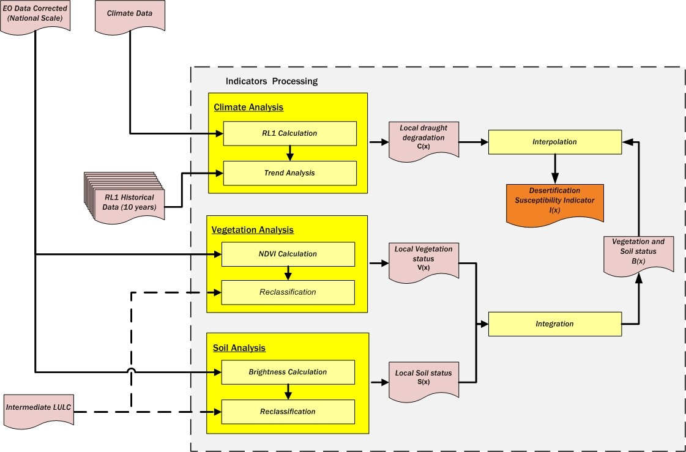

The Desertification Susceptibility indicator is produced by intersecting the LULC previously described with space/time’ climatic and biophysical (which are mainly related to vegetation and soil components) intermediate indicators:
For producing the above indicator, in a first step, it is necessary to compute the following variables with the data provided by the users:
With the previous variables, a set of intermediate indicators are produced:
The preliminary indicators C(x) and B(x) are then integrated so as to produce the final indicator of Susceptibility to Desertification I(x).
This final indicator provides, for each land cover patch, the susceptibility to desertification in terms of vegetation, soil and climate. I.e., a region with sparse vegetation with low vivacity, or a region with soil more exposed and low values of moisture, organic matter, etc.., may not be prone to desertification; however, if a land cover region has those characteristics and a climate prone to drought, it has a great tendency towards desertification.